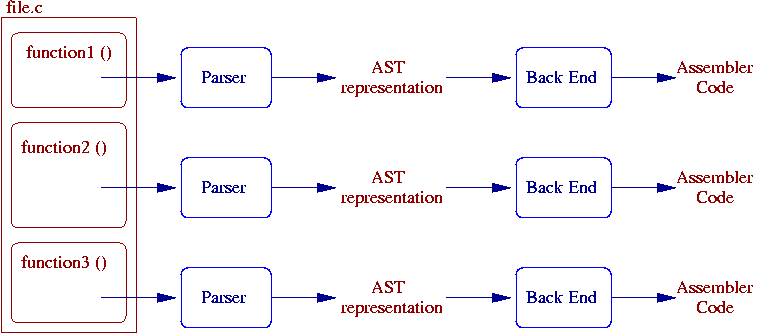

C/C++代码扩张
编译器的编译过程，可以粗略的分为前端和后端，如下图所示:

除了使用反汇编研究编译器的最终结果外，也可以查看编译器生成的AST树表示。AST树是编译器前端所产生的最终代码表现形式。
下面是主流编译器clang和gcc生成AST树的方法:
AST in GCC
gcc -fdump-tree-all main.c
g++ -fdump-tree-all main.cpp
关于GCC中AST树生成的更多选项，参考这里
AST in clang
clang -Xclang -ast-print -fsyntax-only main.c
关于clang中AST树生成的更多选项，参考这里
- Post title：C/C++代码扩张
- Post author：ANATAS LUO
- Create time：2020-06-15 17:01:01
- Post link：https://anatasluo.github.io/2020/06/15/C-C-代码扩张/
- Copyright Notice：All articles in this blog are licensed under BY-NC-SA unless stating additionally.